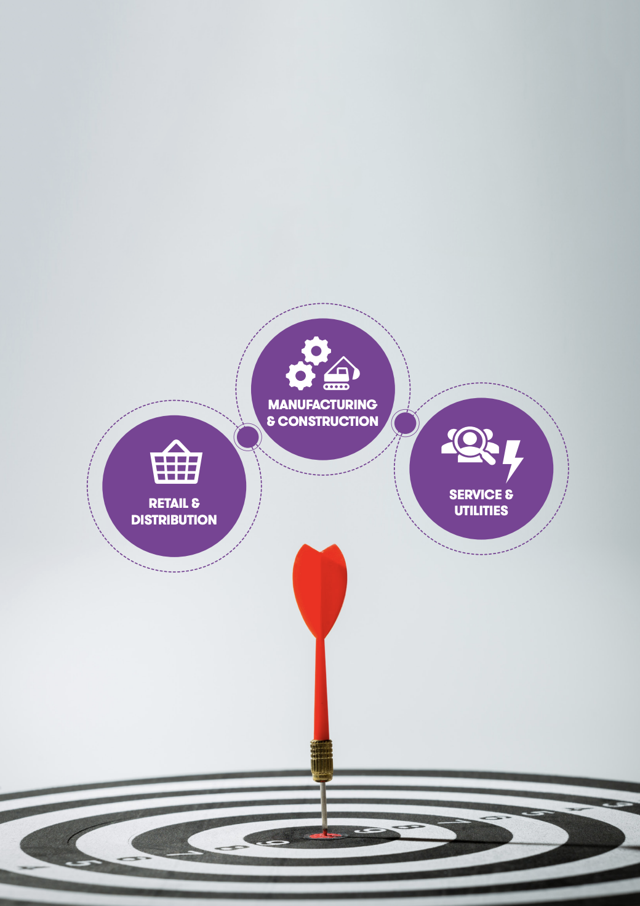

Ovenstående udsagn og det efterfølgende spørgsmål har du sandsynligvis hørt og læst et utal af gange.
Ovenstående udsagn og det efterfølgende spørgsmål har du sandsynligvis hørt og læst et utal af gange. Selvom din virksomhed ikke har fået et cloud-baseret setup endnu, behøver det ikke at betyde, at du ikke ser en cloud-baseret fremtid for din virksomhed.
Det er naturligt at blive nervøs, når man skal ind og ændre den grundlæggende IT-infrastruktur, og at du støder på en række spørgsmål:
”Hvor mange ressourcer vil migrationen til en cloudplatform kræve?”
”Hvilken type proces skal jeg forvente, og hvor meget er jeg nødt til at forberede mig?
”Skal jeg vælge Dynamics 365 som platform for min cloudrejse? Hvad med andre ERP/ITsystemer?”
”Hvor stor del af vores forretning kan et nyt system understøtte?”
”Hvis min rejse i skyen indebærer nye systemer, er mine medarbejdere overhovedet rustede til at skulle overgå til disse nye systemer?”
Du står foran flere store beslutninger, og det er de færreste virksomheder, der er i stand til at drive processen selv uden modspil og rådgivning.
Du har brug for nogen, du kan stole på, og har tillid til.
Nogen, der har erfaring med og indsigt i de udfordringer og muligheder, som netop din industri møder.
Nogen, der kan hjælpe med at definere en vej mod et nyt system med færre usikkerheder og risici.
Nogen, du føler dig selvsikker og komfortabel med at arbejde med.
Du har brug for en forretnings- og IT-partner som DXC Technology.
Denne lange og lokale erfaring giver os en forståelse for de specifikke forretningsprocesser og operationelle udfordringer, som nordiske virksomheder står over for i dagligdagen, og det betyder, at du i DXC Technology får langt mere end bare en teknologipartner.
Med DXC Technology får du en partner, der kan guide jer igennem jeres digitale transformation.
Vi kan udfordre dig og din virksomhed på strategi, forretningsmodeller og tekniske løsninger, så I ikke farer vild på rejsen.
DXC Technology i Norden er en del af en global virksomhed.
Det betyder, at vi har adgang til viden og knowhow fra vores kunder og eksperter i hele verden. Uanset om dine udfordringer er tekniske, strategiske eller kommercielle, kan du og din virksomhed drage fordel af en global pulje af viden og erfaringer.
Som den andenstørste Microsoft Partner i verden får I med DXC Technology som partner adgang til gevinsterne ved 30 års tæt parløb som globale strategiske partnere. Vi har produktkendskab, erfaring og er på første række, når Microsoft præsenterer ny viden og nye løsninger.
På tværs af hele Microsofts økosystem tilbyder vi en bred portefølje af relevante ydelser og løsninger, der blandt andet dækker over ERP-systemer, Managed Services, Power Platform, Business Intelligence, AI, IoT, machine learning, robotics og konsulentydelser, der hjælper dig med din IT-strategi.
Vores globale styrke, lokale erfaringer og partnerskabet med Microsoft sikrer os stærke kompetencer, hvilket holder os på forkant med både tekniske og kommercielle trends.
Vi byder på et langtidsholdbart samarbejde, hvor vi hjælper dig med at forbinde mennesker, data og processer.
Det giver dig og dine medarbejdere den indsigt, fleksibilitet, kontrol og sikkerhed, som I har brug for til at kunne udnytte den digitale transformations muligheder og skabe forretningsmæssig værdi.
Vores mere end 40 års erfaring og vores strategiske partnerskab mellem DXC Technology og Microsoft er afspejlet i måden, vi arbejder på.
Vores implementeringsmetode er inspireret af Microsoft Dynamics Sure Step Metoden og sikrer sammen med vores egne erfaringer og viden, at der er ensartethed i proces, dokumentation og et fælles sprog inden for DXC.
Det giver os en struktureret måde at forstå dig og dine behov som kunde, og det lader os levere en kvalificeret og effektiv implementering til jer.
Vi har derfor valgt en struktur, hvor vi udnytter denne erfaring og på baggrund af din virksomheds størrelse og industri præsenterer den løsning, vores erfaringer viservil passe bedst.
Det er dog ikke overladt til en subjektivvurdering. Samtidig bidrager det til at fastholde vores viden uafhængigt af medarbejdere.
Vores strukturer og skabeloner betyder, at den samlede implementering bliver hurtigere, billigere og med mindre risiko for fejl og overskridelse af budget eller tidsplaner.
Vi ser dette som en pragmatisk valideringsproces, der er et attraktivt alternativ til dyre og tidstunge researchprocesser.
Virksomheder er forskellige, men hos DXC Technology har vi struktureret de erfaringer og den viden, vi har opbygget både lokalt og globalt over mange år i en række løsninger.
Vores løsninger erbaseret på industriskabeloner (Industry Templates), så vi effektivt kan udnytte vores branchekendskab og best practice til at finde den rigtig løsning til jeres virksomhed.
Skulle det vise nødvendigt for din virksomhed med tilpasninger og skræddersyede løsninger, kan de integreres i forslaget fra vores industriskabelon, men vores erfaringer viser, at eksisterende standardelementer er mere end nok for de fleste kunder.
Det sparer tid og gør, at du slipper for at være forsøgskanin, og i stedet får en løsning, der er etableret og afprøvet.
Når du og din virksomhed har godkendt vores forslag baseret på industri templaten, vores branche/vertikal viden og vores erfaringer fra et utal af kunder inden for din industri, udarbejder vi en plan for løsningen, hvor det tydeligt defineres, hvordan de forretningsmæssige krav skal implementeres, og den samlede Microsoft Dynamics 365-løsning skal konfigureres.
Vi er den Microsoft Partner i Skandinavien med flest gennemførte Dynamics 365- implementeringer i bagkataloget, og den knowhow giver os kompetencen til at definere en proces, en tidslinje og et budget, du kan stole på. Vi arbejder med strukturerede projektledelsesprocesser, der hjælper med at sikre klare roller og ansvar, indsigt i status og aktiviteter, hurtig løsning af problemer og fuld dokumentation af hele processen.
Herefter gennemfører vi udviklingen og tester løsningen, der typisk resulterer i et godkendt standardsystem, der inkluderer opsætning af leverandører, brugerdefineret kodning, integrationer, grænseflader og datamigrering.